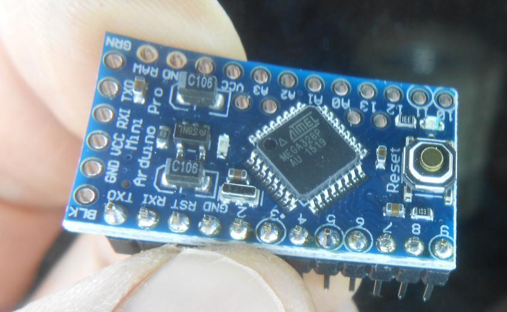

This repository keeps the source code of the Xinu operating system modified to run on an AVR atmega328p microcontroller. Using the major pieces of Xinu from this repository a multi tasking embedded system can be developed (you will also need any bare AVR MCU, or Arduino board, of course).
The source code is comprise of:
Xinu is a small, elegant, and easy to understand operating system, originally developed by Douglas Comer for instructional purposes at Purdue University in the 1980s. Since the internal data structures and algorithms are so clear that it was possible to explain the whole operating system in just one book, including the source code for each componente in their pages.
The Xinu Operating System includes: dynamic process creation, dynamic memory allocation, real-time clock management, process coordination and synchronization, local and remote file systems, a shell, and device-independent I/O functions.
Xinu uses powerful primitives to provides all the componentes and the same functionality many conventional operating sytems supply. Since the whole source code size is small, Xinu is suitable for embedded systems.
Many sites defines Xinu as a free Unix system, or similar statements. It is not. Xinu differs completely from the internal structure of Unix (or Linux). For academic purposes Xinu is smaller, elegant, and easier to understand. Applications written for one system will not run on the other without modification. Xinu is not Unix .
Xinu originally ran on Digital Equipment Corporation LSI 11's with only 64K bytes of memory, at the end of 1979 and the inning of 1980. Over the years Xinu versions Xinu have been expanded and ported to a wide variety of architectures and platforms, including: IBM PC, Macintosh, Digital Equipment Corporation VAX and DECStation 3100, Sun Microsystems Sun 2, Sun 3 and Sparcstations, and for several ARM, MIPS and x86 embedded boards. It has been used as the basis for many research projects. Furthermore, Xinu has been used as an embedded system in products by companies such as Motorola, Mitsubishi, Hewlett-Packard, and Lexmark. There is a full TCP/IP stack, and even the original version of Xinu (for the PDP-11) supported arbitrary processes and network I/O.
There are current versions of Xinu for Galileo Intel boards, ARM Beagle Boards, several MIPS platforms, and for x86 PC hardware and virtual machines.
Current official Xinu versions are designed for ARM, MIPS and x86 architectures . The hardware differences between those and the ultra small AVR microcontroller required some changes to some low-level data structures of Xinu, mainly using the FLASH memory in the AVR MCU, for keeping several read only data structures, previously in RAM. Also, several limits were imposed so those data structures fits into the SRAM AVR memory. The Xinu version for AVR atmega328p has the core functionality of Xinu, and provides some extensions, including an eeprom file system and several UNIX like utilities for the Xinu shell.
This MCU has just 2KB of SRAM, 32KB of FLASH memory, and 1KB of EEPROM. The Xinu version for AVR uses 17KB of FLASH and 0.9KB of RAM, so there is still room (SRAM and FLASH) for the embedded application running on Xinu (concurrent processes).
So this project might be stimulating and very fun for lovers of embedded systems development and operating system internals.
Notes about the port:
Douglas Comer is a Professor of Computer Science at Purdue University who was inducted into the Internet Hall of Fame on September, 2019.
As one of the earliest TCP/IP and internetworking researchers, Comer wrote the first series of textbooks explaining the scientific principles underlying the design of the Internet and its communications protocols, providing some of the earliest formal guidance for building efficient networks and applications that use the Internet.
Comer’s three-volume textbook series, Internetworking with TCP/IP, written in 1987, is widely considered to be the authoritative reference for Internet protocols. The series played a key role in popularizing Internet protocols by making them more understandable to a new generation of engineers and IT professionals.
Xinu is easy of understand, so a developer can obtain a copy of the system to examine, modify, instrument, measure, extend, or transport it to another architecture.